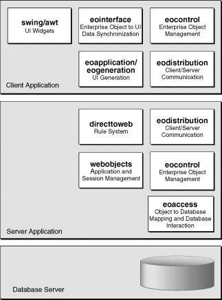

PATH
Documentation > WebObjects 4.5 >
Getting Started With Direct to Java Client
Architectural Overview
Direct to Java Client applications are three tier, comprising a database server, a server application, and a client application. Figure 1 shows the three tiers and the Java packages used in them.

Figure 1. The Components of a Direct to Java Client Application
All of the packages except eoapplication, eogeneration, and directtoweb are used in exactly the same way in a Direct to Java Client application as they are in a Java Client application (an application for which you provide the user interface):
- The webobjects package. Used in the server application to provide application and session management.
- The eocontrol package.Used in both the server and client applications to manage a graph of enterprise objects (object representations of database records). It translates operations performed on enterprise objects into database operations, thereby keeping the object graph and the database in sync.
- The eoaccess package.Used in the server application to handle interactions with the database, using a model file to map database records to enterprise objects.
- The eodistribution package.Used in both the server and client applications to handle communication between the server and application processes.
- The swing and awt packages.Used in the client application to implement the user interface.
- The eointerface package.Used in the client application to synchronize the user interface with enterprise objects. The eointerface package populates user interface widgets with data from enterprise objects. When a user makes changes to the data in the user interface, eointerface notices the changes and make the corresponding changes to the appropriate enterprise objects.
The remaining packages distinguish a regular Java Client application from a Direct to Java Client application.
- The eoapplication and eogeneration packages.Used in the client application to dynamically generate the user interface. Controller classes in these packages define application-level functionality. A hierarchy of these controllers generates and manages an application's user interface. Note that eoapplication contains classes that can be used outside of a Direct to Java Client application. For example, eoapplication's EOApplication object is generally used in regular Java Client applications, as well.
- The directtoweb package.Provides a server side rule system that the client side eoapplication and eogeneration packages use to generate the user interface. The rules specify how to configure the objects in the eoapplication and eogeneration controller hierarchy for a particular Direct to Java Client application.
The way these packages provide their functionality is discussed in more detail in the following sections.
© 1999 Apple Computer, Inc. – (Draft. Last updated 05 Jan 00)